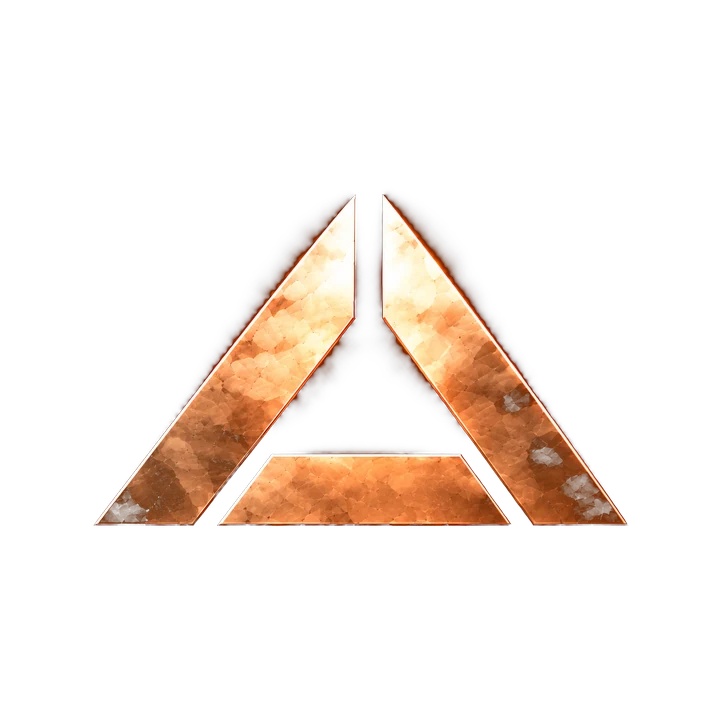
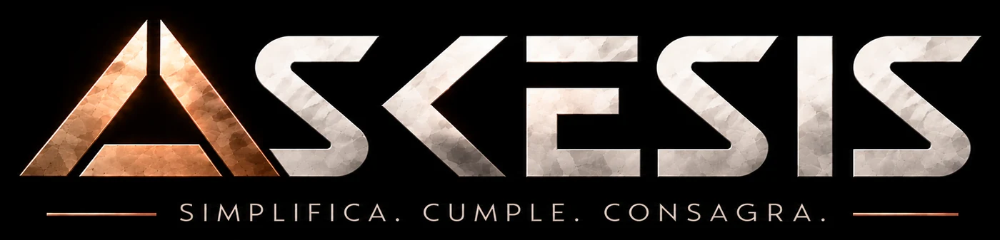
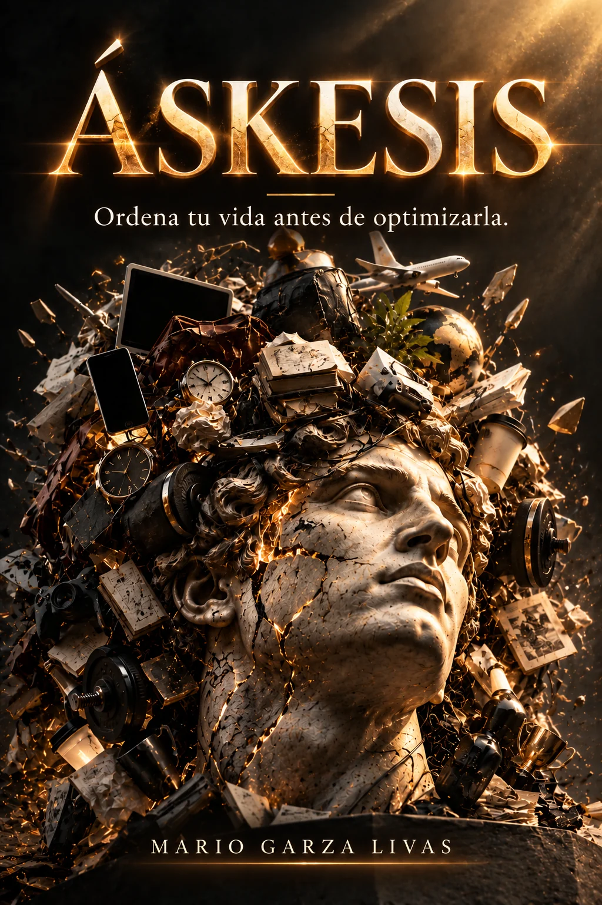
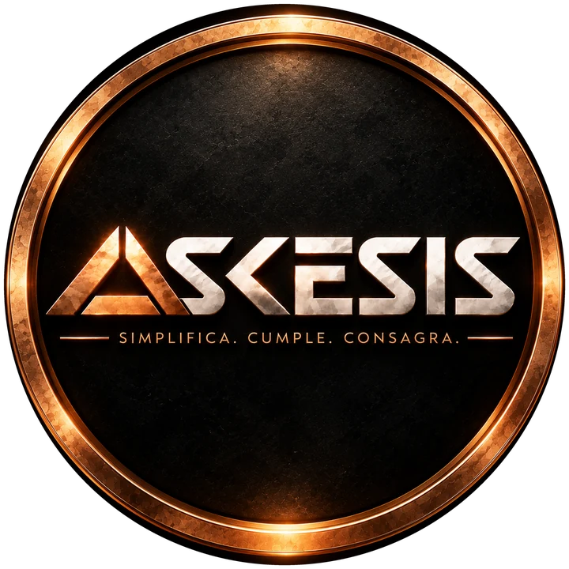

Áskesis —del griego Ἄσκησις, «el entrenamiento»— es una filosofía de entrenamiento de la persona: una forma de vivir con menos desperdicio, más dominio de uno mismo y una vida ordenada alrededor de Cristo. No entrena solamente el cuerpo. Entrena los hábitos, la voluntad y el carácter.
Qué es Áskesis, qué diagnostica y por qué no propone hacer más, sino necesitar menos.
Áskesis parte de una paradoja: nunca habíamos tenido tantas herramientas para organizar la vida y, sin embargo, seguimos viviendo con dispersión, saturación, ansiedad y falta de margen. Una persona puede tener un calendario impecable, cumplir sus hábitos y alcanzar sus objetivos, y aun así avanzar en la dirección equivocada. El problema no siempre es desorden en la ejecución. Puede ser desorden en la elección.
De ahí la distinción que organiza todo el proyecto: eficiencia no es dirección. La eficiencia pregunta cómo obtener un resultado con menos recursos; la dirección pregunta si ese resultado merece ser obtenido. Cuando el rumbo es incorrecto, la eficiencia no corrige el problema: lo amplifica. Por eso Áskesis no empieza preguntando «¿qué más necesito?», sino «¿qué de todo esto es realmente necesario?».
Y debajo de todo, una constatación: todo lo que se repite forma. No existe una zona neutral de la vida. Cada hábito, cada consumo, cada «sí», cada «no» y cada pequeña promesa cumplida está entrenando algo en nosotros. La pregunta no es si estamos siendo formados, sino si ese entrenamiento es deliberado o accidental.
¿Qué es realmente necesario?
Usar poco, necesitar poco, desperdiciar poco. Distinguir lo esencial de lo superfluo. No busca lo mínimo: busca lo suficiente.
¿Qué corresponde hacer?
Hacer lo que corresponde aunque no apetezca, gobernándonos a nosotros mismos. No es dureza ni perfeccionismo: exige fidelidad, no omnipotencia.
¿Hacia quién se ordena todo esto?
Discernir, reconsagrar, ofrecer y confiar. No es un complemento añadido a una vida ya organizada: es el centro desde el cual se reorganiza.
Cada virtud se deforma cuando se separa de su contrapeso. Ninguna, aislada, es suficiente.
Por eso el servicio no es un cuarto pilar. Es el fruto de los tres. El dominio propio no es el destino; es el instrumento para quedar disponible para el bien: para amar, servir, escuchar y cumplir.
Esa filosofía se expresa a través de tres vehículos. El libro la desarrolla completa y la convierte en una Regla de Vida. El videopodcast la entrena en voz alta, en solitario, en conversación y en entrevista. La conferencia la lleva a una sala concreta. Y el Substack la acompaña, entrega por entrega. Áskesis no fue escrita para leerse una vez: fue escrita para practicarse.
No administrar automáticamente cada minuto. Preguntar qué merece ocuparlo y no llenar cada espacio vacío.
Dinero, energía, complejidad y mantenimiento. Lo que una decisión cuesta de verdad, no solo lo que se paga.
Aquello a lo que atiendes participa en tu formación. Concentración, silencio, contemplación y trabajo profundo.
Distinguir ocupación de contribución. No confundir actividad con importancia, ni medir el valor personal por resultados.
Entrenar, comer con moderación, dormir, descansar, perseverar. Entrenamos el cuerpo para entrenar al hombre.
No añadir a Dios a una vida organizada alrededor del yo. Reorganizar la vida desde Él.
La obra fundacional: donde la filosofía se desarrolla completa y se convierte en práctica. Descarga directa en PDF, sin costo.

Ordena tu vida antes de optimizarla.
Áskesis propone una idea sencilla pero radical: no necesitamos una vida más optimizada, sino una vida más ordenada. Cuestiona la cultura del «más» —más objetivos, herramientas, actividad, resultados y control— y sostiene que una vida bien ordenada comienza por discernir qué merece realmente nuestro tiempo, nuestra atención, nuestro esfuerzo y nuestros recursos.
Más que un método de productividad, es una filosofía de formación. Cada decisión produce dos resultados: uno externo —lo que conseguimos— y uno interno —la persona en la que nos convertimos mientras lo conseguimos—. Una conducta puede ser productiva y, al mismo tiempo, deformativa. Por eso el libro no pregunta solamente qué produce una decisión, sino qué te produce a ti.
Y no termina en conceptos. Su última parte traduce la filosofía a una Regla de Vida —el día, la semana, el mes, el año, el trabajo, los recursos, la mente— con matrices, preguntas para momentos de presión, una plantilla, una guía para grupos y un programa de entrenamiento de cuarenta días.
La diferencia no está en cuánto se esfuerza cada quien, sino en el orden en que decide.
Optimizar presupone que aquello que se optimiza merece existir. Por eso la optimización es una actividad secundaria: primero debe existir un criterio. Las reglas sirven para lo previsto; los criterios permiten decidir cuando aparece lo que nadie anticipó.
Cuatro niveles. El desorden aparece cuando uno usurpa el lugar de otro.
Una meta se vuelve identidad. Una urgencia se vuelve prioridad. Una herramienta se vuelve propósito. Contra eso, una sola regla: el telos ordena las metas, las metas orientan los procesos y los procesos organizan las acciones.
El principio operativo de la Frugalidad. No reduce indiscriminadamente: encuentra el mínimo input esencial que realmente mueve el resultado y elimina lo demás. MISO no elimina el estándar. Elimina el desperdicio. Y el costo nunca es solo dinero:
La primera forma de simplificar es eliminar. No tiene sentido automatizar una tarea que debería desaparecer, ni perfeccionar una reunión innecesaria. Y cada decisión se evalúa dos veces: ¿qué produce? y ¿qué me produce?
El orden no es un estado final. Es una práctica continua. La rueda no termina: vuelve a empezar.
No promete control, comodidad, resultados garantizados ni perfección. Promete una vida ordenada: una que puede contener enfermedad, cansancio, pérdida y derrota, pero en la que las cosas conservan su jerarquía. De ese orden se desprenden cuatro frutos.
Porque quien necesita menos depende de menos.
Porque una vida construida sobre el deber no depende de la motivación.
Porque quien distingue responsabilidad de control deja de cargar con lo imposible.
Porque quien recupera margen puede usarlo para amar y servir.
Un videopodcast donde la filosofía se entrena en voz alta: frugalidad, disciplina y fe; hábitos, carácter y voluntad.

Aquí entrenamos la vida. Aprendemos a distinguir lo esencial de lo superfluo, a hacer lo que corresponde aunque no apetezca y a poner nuestro esfuerzo al servicio de Dios, confiando en Su Providencia.
Tres formatos: episodios en solitario, conversaciones y entrevistas. Le habla a quien ya sospecha que no le faltan herramientas, información ni metas, sino un criterio para decidir qué merece su tiempo, su atención y su esfuerzo.
Episodio tras episodio, la misma consigna: Do your best. Let God do the rest.
Suscribirse en YouTubeÁskesis pide mucho de la acción, pero poco del ego. No hace de los resultados una identidad, ni de la disciplina una salvación, ni del cuerpo un dios.
La expresión presencial: empresas, universidades, equipos, comunidades católicas, congresos y encuentros.
Una conferencia de Áskesis no es una charla motivacional, ni una clase de productividad con lenguaje cristiano, ni un resumen del libro. Es una sesión de entrenamiento: una idea que se examina, una distinción que se aprende y una práctica que la audiencia puede empezar al día siguiente.
La audiencia no se define por edad ni por puesto, sino por una sospecha: que el problema no es la falta de herramientas, sino la falta de orden. Personas que ya hacen mucho y empiezan a preguntarse qué de todo eso merece hacerse.
Hay dos maneras de llevarla. La conferencia conduce: tiene dirección definida, mayor curaduría e intensidad. La plática acompaña: es más cercana y conversacional, con participación al servicio de la pregunta. No es una versión menor de la otra; es otra relación con la sala.
Una idea, una distinción y una práctica. Para foros, universidades y encuentros con varios ponentes.
Formato cercano y conversacional. La improvisación ocurre dentro de una arquitectura preparada.
El formato insignia. Recorre el diagnóstico, la distinción, los tres pilares, la práctica y la entrega.
Con interacción, ejercicios y aplicación: la Regla de Vida, la Rueda y el programa de cuarenta días. Para equipos y grupos de formación.
Lo que una conferencia de Áskesis debe ayudar a separar. Casi todo el desperdicio empieza por confundir uno de estos pares.
La tesis completa: por qué la eficiencia sin dirección solo te lleva más rápido al lugar equivocado.
La frugalidad como disciplina de percepción: eliminar antes de añadir y no optimizar lo que no merece existir.
Disciplina y Fe juntas: máximo compromiso con la acción, mínimo apego al resultado. Responsabilidad no es control.
Disponible en español y en inglés, presencial y en línea.
El resto del ecosistema.
Una filosofía de entrenamiento de la persona para vivir con menos desperdicio, más dominio de uno mismo y una vida ordenada alrededor de Cristo. Entrega por entrega, directamente en tu correo.
Landing page personal: contacto, documentos y el resto de los proyectos.
Arquitectura de antifragilidad para el líder, su empresa y su patrimonio.
Entrenar. Una y otra vez. Lo pequeño. Lo necesario. Lo difícil. Lo bueno. Lo que corresponde. Un día a la vez.
Hasta que deje de ser extraordinario y se convierta en carácter. Hasta que nuestro esfuerzo se convierta en ofrenda. Hasta que aprendamos a hacer nuestra parte sin pretender ocupar el lugar de Dios.
Do your best. Let God do the rest.Haz tu mejor esfuerzo. Deja que Dios haga el resto.